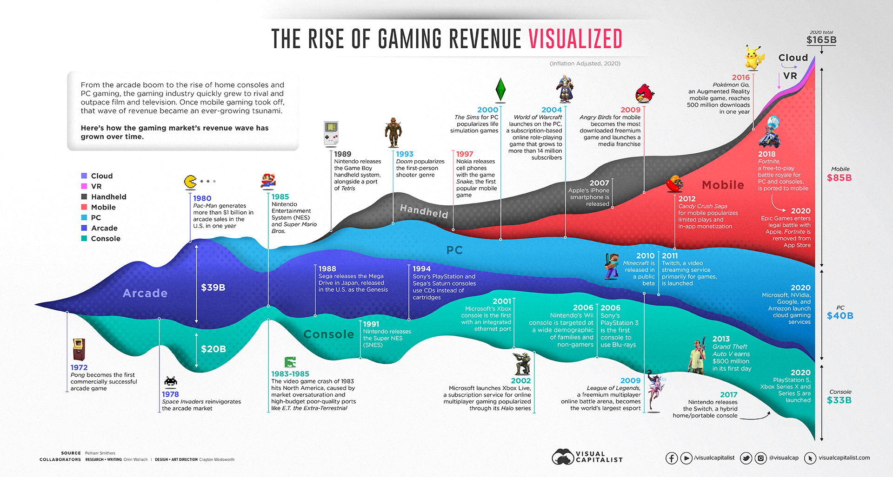
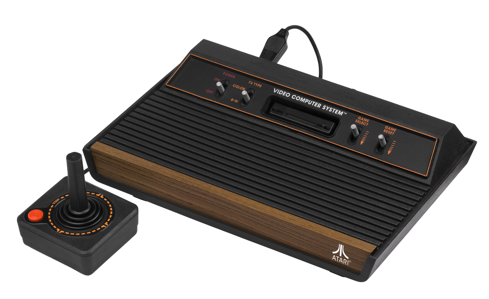

Summary
The Video Game Era can be divided into distinct generations or time periods, each marked by major innovations in technology, gameplay,

1. The Arcade & Pixel Birth (1970s – early 1980s)

- Key Highlights: Pong, Space Invaders, Pac-Man
- Features: graphics, coin-operated arcade machines, rise of pixel art.
- Legacy: Introduced gaming to public spaces and laid the foundation for home consoles.